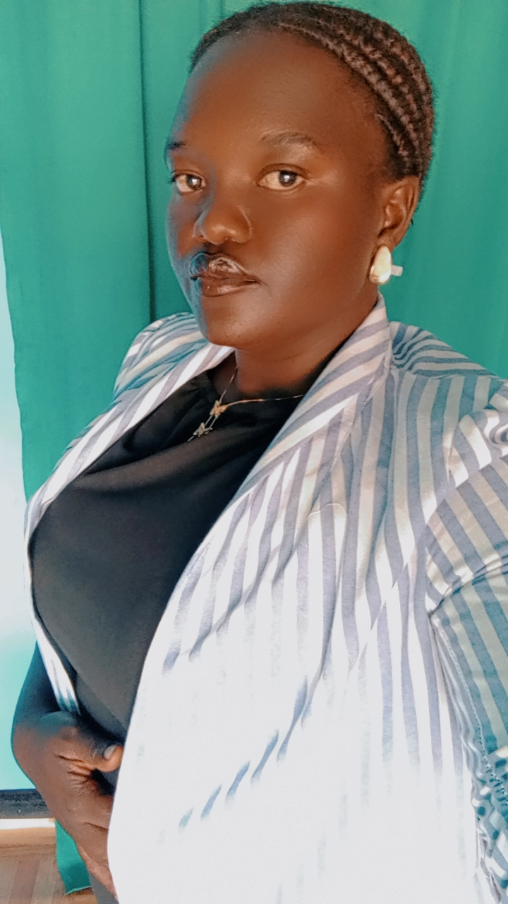
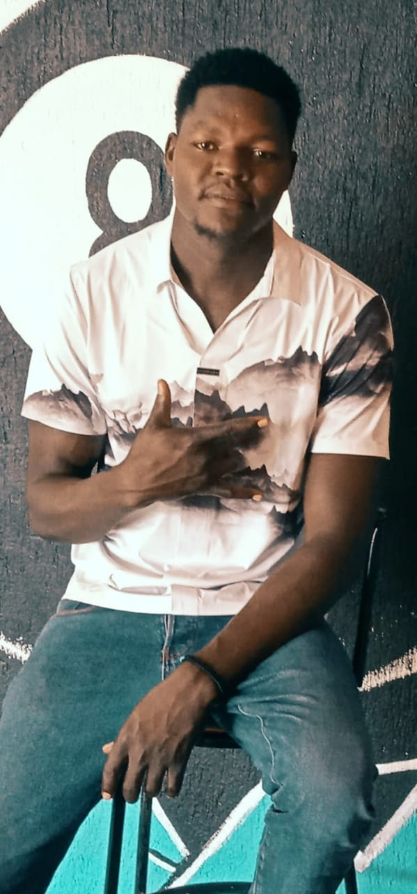

Empowering the Future of Madi Opei
Building a united, peaceful, informed and empowered generation through youth leadership, agriculture, sports, education, skills development and community action.
Discover MOYA Partner with usAbout Madi Opei Youth Association
Madi Opei Youth Association (MOYA) is a registered Community Based Organisation operating in Madi Opei Town Council, Lamwo District, Uganda. It brings together young people to participate in leadership, positive community action, development and mutual support.
MOYA believes that young people are not simply leaders of tomorrow. They are active contributors to the transformation of their communities today.
Our Objectives
Youth leadership
Promoting responsible leadership, accountability and participation in community affairs.
Education and skills
Encouraging education, vocational training, professional development and entrepreneurship.
Economic empowerment
Supporting productive initiatives that improve livelihoods and create opportunities.
Peace and unity
Building relationships across villages and encouraging dialogue, cooperation and peaceful coexistence.
Community transformation
Mobilising young people to participate in practical development activities.
Mentorship
Connecting young people with experienced individuals who can guide their personal and professional growth.
Executive Leadership
Our executive leadership team provides direction, coordination and accountability in implementing the association's objectives.
Rubangakene Philips
Contact: 0789 813 592

Olak Mercy
Atimango Sicola
Ajalo Gloria

Ojara Henry
Contact: 0783 502 982
Message from the Chairperson
To the entire youth fraternity of Madi Opei and our neighbouring communities,
I warmly welcome you to Madi Opei Youth Association. MOYA belongs to all of us. It is a platform through which we can unite our energy, ideas, skills and determination to shape the future we want to see.
My vision is to see young people become active participants in community transformation, not spectators waiting for change. We must invest in education, practical skills, entrepreneurship, responsible leadership, agriculture, sports and service to our communities.
My roots are in Orogo A Cell, Kal Parish, Madi Opei. That village is part of my identity and the foundation of my journey. However, my responsibility as Chairperson reaches beyond my village. I speak to and serve the entire youth community of Madi Opei and the surrounding areas, regardless of village, background or circumstance.
We must not only inherit Madi Opei; we must take responsibility for building its future. Transformation cannot be achieved by one person or one village. It requires collective commitment from young people, elders, cultural and community leaders, institutions, government, businesses and friends of Madi Opei.
I therefore invite every well-wisher and potential partner to walk with us. Your ideas, time, professional expertise, mentorship, networks, materials or financial support can help turn our shared aspirations into practical opportunities.
Let us choose unity over division, action over excuses, and service over self-interest. Together, we can build a generation that is confident, skilled, peaceful and ready to lead.
Rubangakene Philips
Chairperson, Madi Opei Youth Association
Mentorship and Advisory
Jameson Onekalit
MOYA Mentor and Adviser
Contact: +256 774 240 242
Guiding the Next Generation
MOYA recognises mentorship as an important part of youth growth. Through guidance, experience and encouragement, our mentor supports young people in developing self-discovery, responsible leadership, gratitude, discipline and service to the community.
Message from the Mentor
To the young people of Madi Opei, your future is shaped by the decisions you make today. Never underestimate the value of education, discipline, humility and hard work.
Believe in your abilities, respect one another and remain willing to learn. Your background should not limit your dreams. Whatever opportunities come your way, use them wisely and remember the community that helped shape you.
Success is not only measured by personal achievement. It is also measured by what we contribute to the lives of others. As you grow, remember to give back, mentor others and participate in building a stronger Madi Opei.
May MOYA become a platform where young people discover their potential and work together for a better future.
Jameson Onekalit
Mentor and Adviser
Programmes and Community Development
Cassava Production
Promoting cassava growing as a practical agricultural activity for food security and household livelihoods.
Coffee Production
Planning coffee production as a long-term agricultural and economic empowerment initiative.
Sim-sim Production
Encouraging simsim growing to strengthen food security and create opportunities for income generation.
Education and Skills
Encouraging learning, vocational skills, mentorship and professional development.
Community Support
Promoting solidarity, volunteerism and collective support during community challenges.
Sports and Recreation
Using sports to build discipline, teamwork, friendship, peace and talent development.
Madi Opei Premier League
The Madi Opei Premier League brings together 16 participating clubs to promote football, youth talent, discipline, sportsmanship and unity across Madi Opei and surrounding communities.
Our partnership
The league is implemented in partnership with:
- Madi Opei Youth Association (MOYA)
- Madi Opei Development Association (MODA)
- Office of Ker Kal Kwaro Madi Opei
The partnership promotes continuity, community ownership and sustainability of the competition.
Support and sustainability
The league welcomes well-wishers, businesses, organisations and individuals willing to support its development. All contributions should be coordinated through the league management committee. The committee will coordinate the purchase of approved sports equipment and tournament requirements.
Player welfare and safety
Participating clubs and their managements are encouraged to make appropriate player welfare arrangements in accordance with the league's agreed MOU. Minor injuries are handled through the agreed club-level arrangements. Serious injuries and other major incidents should be addressed under the responsibilities set out in the signed agreement and applicable arrangements.
The league champions will be recognised during the MOYA Annual Youth Gathering on 27 December 2026.
Madi Opei Youth Annual Gathering 2026
The annual gathering brings together youth, elders, community leaders, partners and friends of Madi Opei to celebrate achievements, discuss community issues and strengthen our shared commitment to transformation.
Gathering Activities
Community cleanliness activities and sports gala.
Starting at 7:00 AM from Madi Opei Town Council to Lawiye Oduny, next to the hill site.
Promoting voluntary blood donation and community health awareness.
Creating space for cultural interaction, community dialogue and togetherness.
Recognising the league champions and celebrating football talent.
Featured Speakers
Sir Gole Andrew
Technology and the future of young people.
Dr Oyoo Charles Akiya
Mental health, alcohol and drug abuse awareness.
Hon. Sarah Okoo
Youth, family and responsible relationships.
Call to all Madi Opei Youth and Friends
All young people born of Madi Opei, residents, neighbouring communities, development partners, organisations and well-wishers are warmly invited to participate and support the second edition of our annual gathering.
Your presence, ideas, participation and contribution will help make this gathering meaningful.
Partner With MOYA
MOYA welcomes development organisations, NGOs, CBOs, government institutions, private companies, educational institutions, philanthropists and individuals who share our commitment to youth empowerment and community transformation.
Areas for Support
- Agriculture and food security
- Youth skills and mentorship
- Education and leadership
- Sports and talent development
- Community peace and unity
- Annual youth gathering
Every Contribution Matters
Support may include financial assistance, equipment, training, professional expertise, mentorship, networks, materials or volunteering.
We value partnerships founded on transparency, accountability, respect and lasting community impact.
Contact Madi Opei Youth Association
For membership, partnership, mentorship and programme enquiries, please contact our representatives.
Location: Madi Opei Town Council, Lamwo District, Uganda.
Website: Madi Opei Youth Association (MOYA)